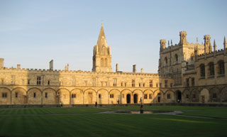
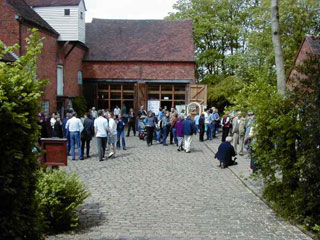
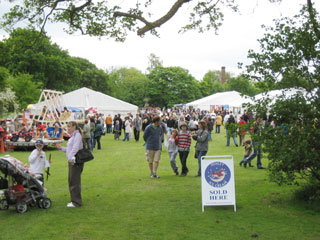

|
 |
Close window
© 2009/2010 Festival in the Shire Journal. All rights reserved.
|
 |
|
| Oxonmoot: An Oxford college location |
The Tolkien Society:
a home for 'those who would wander with friends in Middle-earth'
(A Forty Year Hobbit) Ian Collier
As we all know the phrase “In a hole in the ground there lived a hobbit...” was coined on an exam script, and moved from scrap paper to bedtime story to manuscript and eventually commercial and critical success in The Hobbit. This book introduced hobbits and Middle-earth to readers around the world, although perhaps it has over time been somewhat overshadowed by the success of that much longer and darker work The Lord of the Rings, and of course the latter has been filmed and available on DVD for many years whilst the former is still to have a cast announced let alone be filmed.
What some of you may not know though is that the success of these books sadly led to another kind of overshadowing; the shadow cast by unthinking elements in the worldwide fans of the author's work. Although compared to some more recent excesses in the world of celebrity stalkers or intellectual property theft, these incidents of middle of the night phone calls, trampled roses, or dragging Gandalf and hobbit pipe-weed into illegal drug-taking might seem small beer. But they upset Tolkien and his comments on a 'deplorable cultus' have been used against his fans of all stripes over the years. In late 1968 various people began talking about forming a British Tolkien Society (there was already one in America) in part to counter the use of Tolkien's works by the extremes of hippiedom and the author Vera Chapman advertised in December 1969's issue of New Statesman the conception of The Tolkien Society, thus it is now in its fortieth year. The idea was for a society whose aim would be "to further interest and study in the life and works of J.R.R. Tolkien, CBE", thus including his works of philological study as well as the famous (and not so famous) works of fiction. In 1972 Vera met and talked to Tolkien at a publisher's party and he agreed, when asked, to be the Society's Honorary President.
The earliest meetings were friendly gatherings. As numbers grew so came the drawing up and adoption of a constitution and in time the Society was registered as an educational charity. Tolkien was asked, and agreed, to become President—so while not necessarily the oldest Tolkien Society, we are the only one so approved. After his death in 1973 consultations with his family decided that he should remain president in perpetuo and that his daughter Priscilla become Honorary Vice-president. We still have close and friendly links with both the late Professor’s family and publishers, also with fellow literary societies and other groups in all fictional fields.
So much for the founding history. I suspect readers will be keener on knowing “What is the Tolkien Society in its fortieth year?” Well, it’s still a serious literary Society, but one might consider that the Society is very much like Bilbo: quiet and unassuming, fond of books, generally considered to be well read, communicative across a wide territory (inside and outside the Shire), interested in the elven languages (speaking some, studying others), passionately involved in learning and exploring the histories of Middle-earth, taken with myths, often fond of ‘interesting’ clothes; and very fond of good cheer, good company, and a good chat.
But hang on a moment. If this charity is a serious literary society what is with the Baggins similes? The simple answer is that the membership is made up of fans and scholars of Tolkien’s works and worlds. To put it another way, the Society is a home for “those who would wander with friends in Middle-earth” as it helps to bring together those with like minds, both formally and informally. There are gatherings throughout the year for the whole Society, or for local groups, known as ‘smials’ after the hobbits’ holes—and over the forty years some of the overseas smials have grown into national societies of their own. Many members have met up and married, some also have had kids within the Society, and many long-term friendships across continents and oceans have evolved. The Society is the sum of its members.
Tolkien Society membership is open to any person, library or other organisation, that wishes to pay the annual subscription (varied by postal region), and though based in the United Kingdom we have members in forty countries. These members range in age from under ten to over seventy, and come from a very wide variety of social, educational, and professional backgrounds (including students, engineers, teachers, accountants, nurses, midwives, shopkeepers, lecturers, the retired, unemployed, housewives/husbands, and gardeners).
The Society is registered as an independent, non-profit making charity and so has to be run by a committee; this is made up of members who volunteer for elected or appointed posts. The elected posts are Trustees who oversee certain areas or do a specific job, while appointed officers do the ‘not quite day to day work’ (as the Society is run in the spare time that the volunteers can offer) of publishing magazines or maintaining the website. A member’s annual subscription provides for six issues of the Society bulletin Amon Hen, and copies of the journal Mallorn (Henry Gee, the current editor, has been busily providing members with two of these a year at present). The bulletin gives members advanced news, and reduced fees, for events, access to books by and about Tolkien; while the journal covers wider ranging topics of Tolkien study and more in-depth reviews. The subscription also funds the activities and educational work of the Society. In addition, we maintain an extensive Archive, which is available to members and other scholars for consultation by appointment with the Archivist: within the Archive there is a wide range of press cuttings and fanzines, items of artwork, and ephemera.
That’s all well and good, you might say, but what do you actually do? Aside from reading books, bulletins, and journals, or writing articles for them, or answering queries and helping students and scholars, the Society does mostly what the members want to do. So one smial may meet twice a month whilst another meets on a weekly basis, whilst other members are content to read their magazines and meet up over the internet or at the major gatherings arranged by the committee or sub-committees, such as Oxonmoot (more of which anon). The Society has also organised conference events such as the 1992 Tolkien Centenary Conference, marking Tolkien’s centenary year, in partnership with the Mythopoeic Society; Tolkien 2005: The Ring Goes Ever On, celebrating fifty years of The Lord of the Rings in partnership with several societies; and the forthcoming 2012: The Return of the Ring; and naturally there will be the fruits of others’ labours to look forward to with this summer’s Festival in the Shire!
The overall Society calendar begins with the Tolkien Birthday Toast at 9 p.m. (local times) to celebrate Tolkien’s birth, life and creativity, with local groups meeting in members’ homes or gathering in pubs and restaurants. The Society hosts pages on its website where members and non-members can share the Toast and their thoughts on it and, if they wish, announce or arrange a local gathering.
|
 |
|
| Sarehole Mill |
In the Spring there are the Tolkien Reading Day, the Annual General Meeting and Dinner and the ‘Middle-earth Weekend’ at Sarehole Mill in Birmingham. In the Summer there is the annual Seminar, possibly a Summermoot, or a conference event, and the autumn sees Oxonmoot and possibly an Autumnmoot.
Tolkien Reading Day is an event set up to encourage the use of works of J.R.R. Tolkien in education and to get schoolteachers, lecturers, and library staff to participate in reading Tolkien to their classes and in their libraries. It also helps the founding of reading groups in libraries and cafes by suggesting a theme for the day and publicising and encouraging Tolkien-related readings and activities. Due to the nature of some venues local groups taking part often shift their event to the nearest weekend but the events are tied into the main day’s publicity.
The AGM and Dinner, are held in a different town or city in the each year so that the travel involved is evenly spread amongst the members. At the AGM the Trustee committee members are elected, the accounts looked at, and reports given on the running of the Society with some discussion of other important matters if any arise. Afterwards in the evening there is the formal Dinner. This, aside form good food and good company, includes a talk from a guest speaker, often someone who knew J.R.R. Tolkien, a scholar, publisher or someone explaining how his works affected them. Past guest speakers have included Rayner Unwin, Prof. Tom Shippey, Brian Sibley, Colin Duriez, and Ted Nasmith.
|
 |
|
| Sarehole Mill |
The ‘Middle-earth Weekend’ events are aimed at raising local awareness of environmental conservation projects in the area around Sarehole Mill and the River Cole in southern Birmingham using Tolkien's connection, Tolkien having lived in the area as a boy (in fact the hobbit Ted Sandyman’s mill is based on Sarehole’s). The Society works with the organising group, the city council, and local environmental groups on the events and it is hoped that, aside from making a great weekend’s entertainment that brings in up to 10,000 folk from across the UK, Europe, and from as far away as Japan, these events will help the work to preserve the green areas around the mill and at nearby Moseley Bog (a piece of the Old Forest perhaps). The events have already resulted in the founding of the Shire Country Park and ideally in the future a Tolkien study centre can be set up nearby.
In early summer the Society runs a Seminar. Again the location varies each time. In 2010 we’ll be running two either side of the Festival in the Shire, with one in Birmingham, UK, in June and one in Melbourne, Australia, in late August. The Seminar consists of a programme of talks on a Tolkien-related theme (this year the themes are Tolkien and Birmingham and Tolkien’s Odysseys respectively), and any member who wishes can prepare a paper; so the presentations range from the serious to the light in tone and there is usually something for everyone. Summermoot, and likewise later in the year Autumnmoot, are occasional events arranged by a smial that offers to host an event to encourage members to visit their part of the world, and enjoy chatting about Tolkien and making new friends whilst and enjoying historic sites, good food, and similar.
The special event of the Tolkien Society year though is Oxonmoot. This is held over the weekend in September, closest to the 22nd, and in an Oxford College. There are a range of events such as academic, and informal, talks, workshops like Merry & Pippin’s Dance Workshop, a slide-show of cover artwork culled from holdings in the archives, a dealers’ room with booksellers (new, secondhand and rarity specialists), an art show (with professional and amateur works). Of course there is also an opportunity to explore Tolkien’s Oxford, plus a quiet area where attendees can drink, take refreshments and chat with old or new friends. Naturally there is also a party including a masquerade (for those interested in costume making) as well as entertainments put on by members. It is a great time for making new friends in the Society. The Sunday is more sombre as there is Enyalië, a wreath-laying and short act of remembrance at Tolkien’s grave in north Oxford. Many members have met partners through Oxonmoot and aside long-term relationships many others have had such a good time over the years that the farewell is no longer good-bye but “Oxonmoot”, where the preceding ‘See you next ...’ goes unsaid.
 |
|
| Oxonmoot: Enyalie |
Aside from these events smial gatherings happen according to the nature, location, and will of the group. Smials can also include non-members (with the exception of the AGM, non-members are welcome to come along to meetings). Smial-moots might be a gathering to discuss Tolkien’s works, as well as other writers and topics. The formality and seriousness of meeting varies depending on the inclinations of members and likewise the venue, public house, cafe, or member’s home. There is also an active Young Members group, “Entings”, which has its own newsletter and section in the Society bulletin, for those members under eighteen.
The Society has a web site which provides members and non-members with general information about itself and the world of Tolkien at www.tolkiensociety.org and you can join online!
Article revised 9th February 2010
Apology: Please note a correction to this article. The account of the founding of the Tolkien Society, summarized for a general readership, inadvertently transposed Vera Chapman's advert founding the society and the meeting with Tolkien at a party, making 1972 come before 1969 and potentially giving the impression that Tolkien had a greater part in the founding of the Society than was the case. Thanks to Charles Noad and Colin Duriez for kindly bringing this to my attention and apologies for any confusion caused.
Found this page without going through the magazine front page? Click here: Festival in the Shire Journal. For all things Tolkien inspired.